fiber sequence of the inclusion of CPn into CP infinity
Proposition
The inclusion of 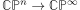 lives in a fiber sequence
Proof
Let  be the fiber of the inclusion.
be the fiber of the inclusion.
Note that the skeleton inclusion 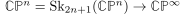 is connected.
Furthermore 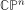 is simply connected.
Furthermore 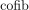 of 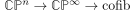 has homology in degrees 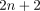 and above.
So relative Hurewicz theorem tells us that the homotopy of the fiber
and it has to be zero before that.
Now consider the cohomological serre spectral sequence, here exemplarily for 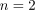
Now the element 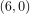 entry must be killed, since 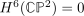.
Hence the map must be an isomorphism.
furthermore multiplication of a multiplicative spectral sequence under different pages tells us that 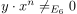 must be nonzero in the 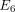 page, since we will show that its differential under the leibniz rule will be nonzero:
The leibniz rule says up to sign
so in particular 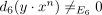 and each 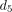 from the 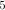-th row must be an isomorphism - hence up until the
Furthemore 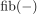 can't have homology in degrees above  since then 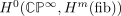 can't be killed.
since then 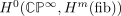 can't be killed.
therefore nilpotent cohomology sphere is equivalent to a sphere shows that 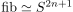 as desired